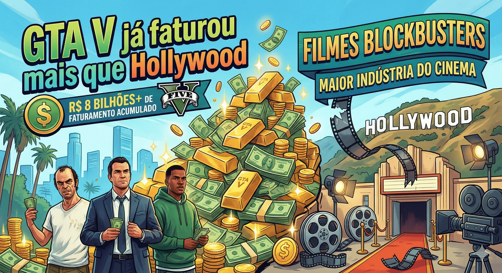
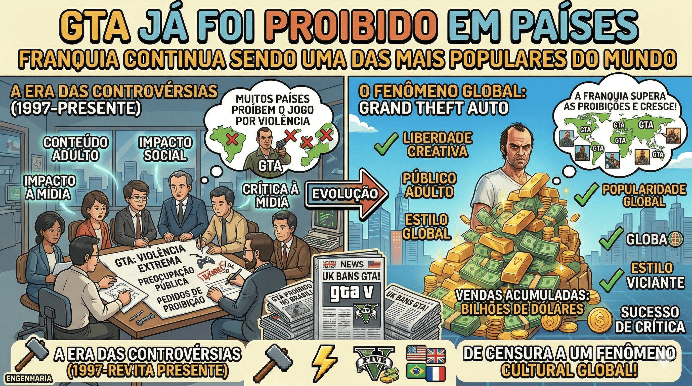
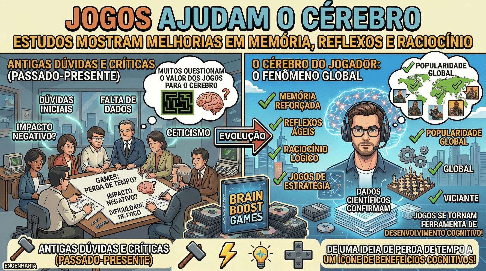

GTA V arrecadou mais de 6 bilhões de dólares, superando grandes filmes de Hollywood. É considerado um dos produtos de entretenimento mais lucrativos da história.

Minecraft foi criado por Markus Persson (Notch) sozinho no início. O jogo vendeu mais de 300 milhões de cópias, sendo o mais vendido do mundo.

Antes de ser encanador, Mario era carpinteiro no jogo Donkey Kong (1981). Ele só virou encanador depois.

A SEGA criou Sonic para competir diretamente com Mario da Nintendo e conquistar o público jovem.

A Sony ia criar um console com a Nintendo, mas a parceria acabou. Depois disso nasceu o PlayStation.

Alguns jogos da franquia GTA foram proibidos por causa da violência, mesmo sendo extremamente populares.

Estudos mostram que jogos melhoram memória, reflexos e raciocínio lógico, principalmente jogos de estratégia.
